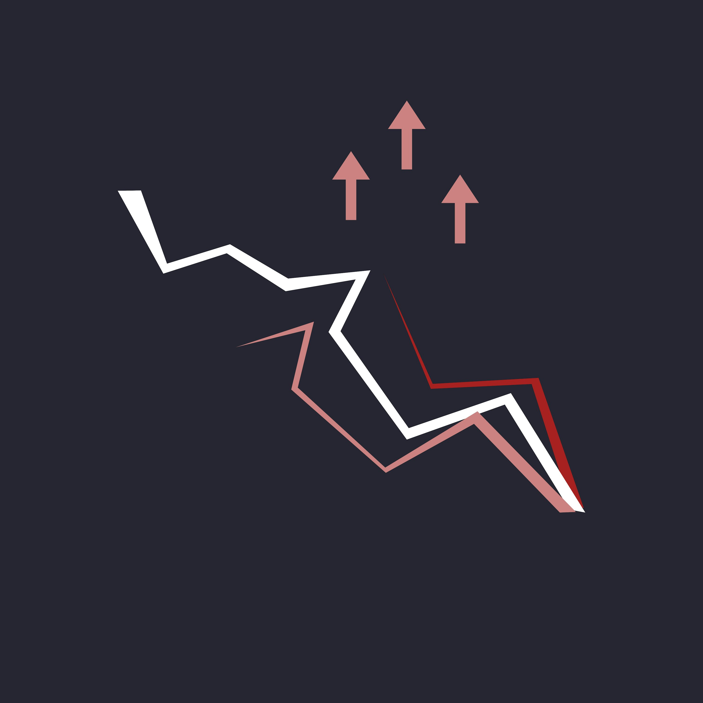

Venue-level baseline
A clean baseline of where execution quality is degrading, where spreads drift, and where decision latency is created.
Offer: focused assessment of execution quality, order book analytics infrastructure, and spread monitoring across active venues. Delivered as a prioritised improvement roadmap with commercial impact estimates.

A clean baseline of where execution quality is degrading, where spreads drift, and where decision latency is created.
A practical read on data, monitoring, and operational bottlenecks limiting execution consistency.
Sequenced improvements tied to execution quality and operational impact, not generic architecture clean-up.
Short, focused diagnostic mandate with desk and infrastructure stakeholders. Output includes measurable baseline, gap map, and priority plan for implementation.
Rayleigh Stark is a trading name of Premium Services & Network UK Ltd.